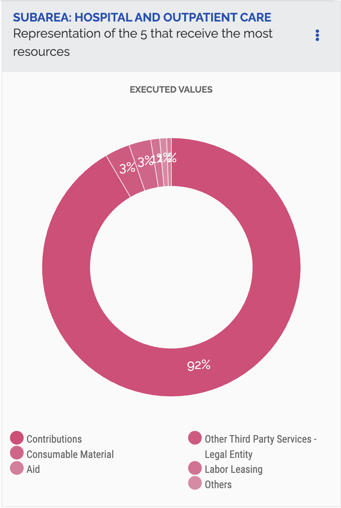

Set up your own GitHub account and live page using GitHub Pages. Add two charts using the vegaEmbed function (one from the course repository and one from an external web source).
Chart 1: Added from Richard's Repository
Chart 2: Added from the web
Build two separate charts using the "create" tool from the Economics Observatory Data Hub. Embed both charts into your page using the vegaEmbed function.
Chart 3: Unemployment rate in Ethiopia
Chart 4: Internally displaced people in Ethiopia
Produce two charts that support or refute (or relate to) a topic of policy debate.
Policy Question: Should the UK Implement Targeted Obstetric Care Programs for Ethnic Minority Women?
Together, these charts reveal clear disparities in maternal and neonatal mortality among ethnic minority women, suggesting that current universal maternity and neonatal services are insufficient at addressing the specific risks faced by these demographic groups.
Find a chart used by a policy organisation, journalist, think tank, television channel, or company. Replicate it, then improve on it.
I found this chart on the Brazilian Government's Transparency Portal website. It gives an overview of how spending is distributed within the Hospital and Outpatient Care sub-area.
Original:
My Replication:
My Improvement:
This improved version converts the original pie chart into a bar chart to make comparisons between categories clearer. It also replaces layered, fixed labels with hover tooltips to reduce clutter and improve readability. Finally, each category is given a distinct colour from the accessible Okabe–Ito palette to make groups easier to differentiate.
Add a chart to your site that uses a live link to an API. Below the chart, add a functional description of the API.
Base URL:
https://api.worldbank.org/v2
Endpoint: /country/{country_code}/indicator/{indicator_code}
• {country_codes} → GBR;JPN;CAN;USA;FRA;DEU;ITA
• {indicator_codes} → EN.GHG.CO2.PC.CE.AR5
Parameters:
• format=json → Specifies the response format as JSON
• per_page=455 → Requests 455 results per page
Complete URL: https://api.worldbank.org/v2/country/GBR;JPN;CAN;USA;FRA;DEU;ITA/indicator/
EN.GHG.CO2.PC.CE.AR5?format=json&per_page=455
Using a Google Colab python notebook, scrape a website. Then clean and normalise the data and export into TIDY (long form) format.
Olympic medal table data were scraped from Wikipedia using Requests and BeautifulSoup, then cleaned, sorted by total medals, and reshaped into long format by medal type. A minor challenge was needing specifying a user-agent to access the page.
Use a loop to batch download six different series as JSON files. Also use a loop in your Javascript in order to embed the six charts
To create the dashboard below, I used a JavaScript loop to batch query the UK Police Crime API by crime category and visualised the top five streets by incident count for each offence type.
Produce two maps and embed them in your portfolio page. One map should be of Scotland, the other should be of Wales.
Coordinates Map:
Choropleth Map:
Produce two charts using either of the two UK prices datasets provided in class. Explain, in no more than 50 words, what you have done.
Using the Long Run Prices Database, I selected products based on their description names and alignined them to a common start and end date to create a consistent time series. Prices were averaged to smooth short-term variation. The first chart aggregates the average monthly prices of ingredients used to make sangria, showing how the prices of these goods have evolved alongside inflation over time. The second chart examines average kebab prices over time, disaggregated by UK region to explore regional variation in price levels and dynamics.
Produce two charts that include interactivity. It could be a slider, drop-down box, clickable legend. Or any other form of interactivity that allows the user to better understand your data.
Use the slider to see how neglected sites have emerged spatially across Glasgow over the past 40 years.
Select a deprivation domain from the drop-down menu to see how median SIMD ranks vary across different distance bands following the regeneration of a nearby derelict site.
Produce a chart that uses more advanced analytics than standard line, bar or scatter charts. This could include any of: Bubble, histogram of distributions, de-trended (including univariate regression), shock analysis, Diff-in-Diff, heat maps.
Conduct an applied data analysis using any of the machine learning techniques taught in the Week 10 lecture and seminar. One option is Supervised learning (Regression or Classification); another is the Unsupervised learning (Clustering or Dimensionality reduction) method.
Hypothesis: A data zone's deprivation profile can predict its distance to the nearest derelict or vacant land site.
Interpretation: Deprivation indicators predict distance with weak accuracy (R² ≈ 20%), indicating some predictive power but still significant unexplained spatial variation.
Maternal Mortality Notebook (CC3)
Neonatal Mortality Notebook (CC3)
Olympic Medal Scraper Notebook (CC5)
Crimes Loop Notebook (CC6)
Derelict Land in Scotland Notebook (CC7)
Sangria Recipe Notebook (CC8)
Kebab Prices Notebook (CC8)
Derelict Land in Glasgow Notebook (CC9)
SIMD x Distance to Athlete's Village Notebook (CC9)
Change in Median SIMD Ranks Notebook (CC9)
Predicting Distance Notebook (CC9)